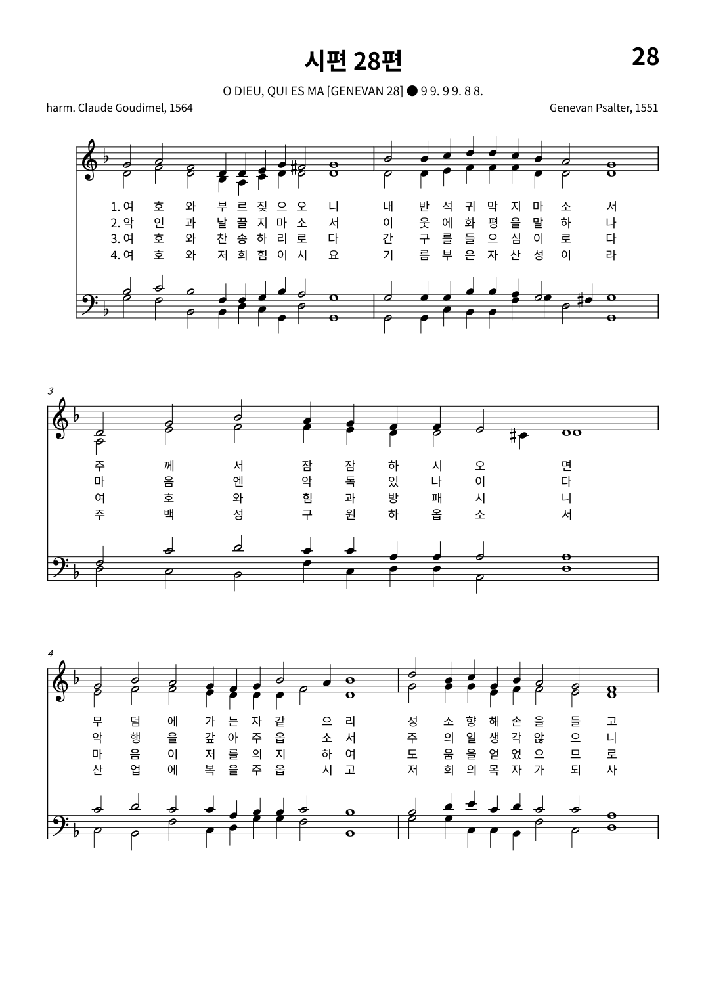

시편 28편
O DIEU, QUI ES MA [GENEVAN 28] · 9 9. 9 9. 8 8.
곡조: Genevan Psalter, 1551 · 화성: Claude Goudimel, 1564 · 가사: 개역한글판 시편 28편 편역(AI 초벌 편역판 · 신학 감수 전) · 4절
악보 PDF MusicXML(출력용) MusicXML(반주용, 전주·반복 포함) 개역한글 시편 28편 읽기

가사
1절
여호와 부르짖으오니
내 반석 귀 막지 마소서
주께서 잠잠하시오면
무덤에 가는 자 같으리
성소 향해 손을 들고
내 간구를 들으소서
여호와 부르짖으오니
내 반석 귀 막지 마소서
주께서 잠잠하시오면
무덤에 가는 자 같으리
성소 향해 손을 들고
내 간구를 들으소서
2절
악인과 날 끌지 마소서
이웃에 화평을 말하나
마음엔 악독 있나이다
악행을 갚아 주옵소서
주의 일 생각 않으니
헐고 안 세우시리라
악인과 날 끌지 마소서
이웃에 화평을 말하나
마음엔 악독 있나이다
악행을 갚아 주옵소서
주의 일 생각 않으니
헐고 안 세우시리라
3절
여호와 찬송하리로다
간구를 들으심이로다
여호와 힘과 방패시니
마음이 저를 의지하여
도움을 얻었으므로
기뻐하여 찬송하리
여호와 찬송하리로다
간구를 들으심이로다
여호와 힘과 방패시니
마음이 저를 의지하여
도움을 얻었으므로
기뻐하여 찬송하리
4절
여호와 저희 힘이시요
기름 부은 자 산성이라
주 백성 구원하옵소서
산업에 복을 주옵시고
저희의 목자가 되사
영원토록 드십소서
여호와 저희 힘이시요
기름 부은 자 산성이라
주 백성 구원하옵소서
산업에 복을 주옵시고
저희의 목자가 되사
영원토록 드십소서